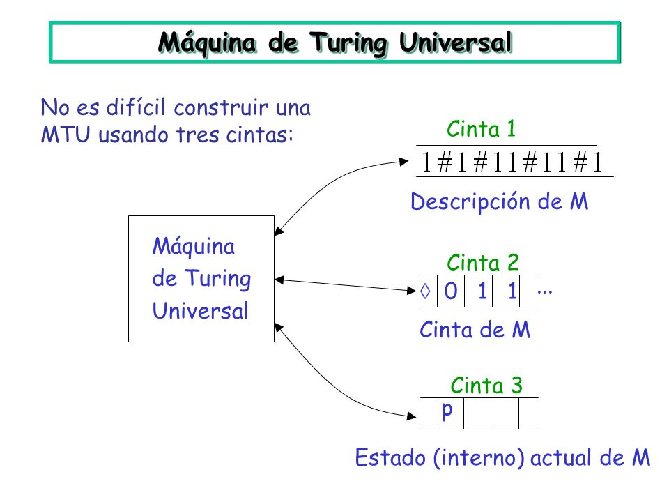

------------------------------------------------------------------------------------
Máquina de Turing Universal

Turing definió que es posible desarrollar una única máquina que pueda ser usada para computar cualquier secuencia computable. Si esta máquina U es suministrada con una cinta que en su comienzo esté escrita con tuplas quíntuples separadas por punto y coma provenientes de una máquina M, entonces U computará las mismas secuencias que M.
Este modelo de computación supone el avance teórico fundamental que condujo a la noción de programa de computadora almacenado.
Ejemplo:
Sea g(x) una función parcialmente calculable de una variable y sea z0 el número de un programa P en el lenguaje Y que calcula g. Entonces, si comenzamos con la configuración
B x B z0
↓
q1
donde x y z0 están escritos como series de 1 (en notación unaria), y la máquina M comienza a calcular, M puede usarse para calcular cualquier función parcialmente calculable de una variable.
¿Cual sería el problema de la parada para las Maquinas de Turing?
Alan Turing demostró en su famoso teorema de indecibilidad que no es posible escribir un programa de ordenador que nos diga si otro programa cualquiera se queda o no se queda colgado. Este es el famoso «problema de la parada» para el que no hay programa posible.
Vamos a demostrar en esta sección que el problema de la parada para una máquina de Turing M no tiene solución, es decir, no existe ningún algoritmo (expresado en cualquiera de las formas conocidas) para determinar cuando M parará cuando empiece con una entrada dada.
TEOREMA
Existe una máquina de Turing K con alfabeto {1} cuyo problema de la parada asociado es irresoluble (indecidible)